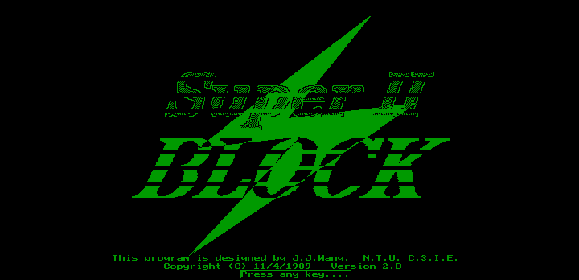
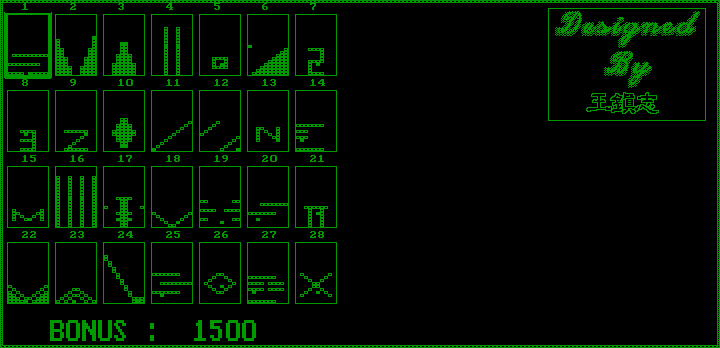
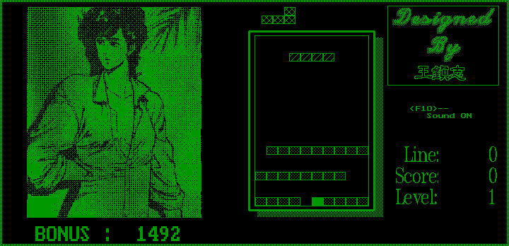

名稱：俄羅斯方塊2代 (Super Block 2，英文版)
簡介：台大資工系王鎮志1989年開發的俄羅斯遊戲，由太陽軟體代理發行。遊戲規則為清除
遊戲一開始就有的最上方方塊，即可過關 [待補]。



備註：本版為DosBox整合版
保護：磁片
限制：只能在單色螢幕上執行。
操作：
左右鍵 = 移動
Enter／Pad-5 = 轉動方塊
下鍵 = 直接掉落
Space = 方塊下降5格
F10 = 聲音開關
Esc = 結束遊戲